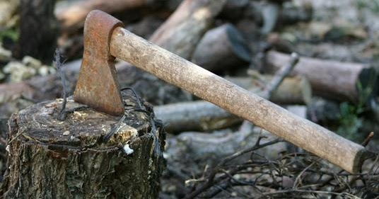
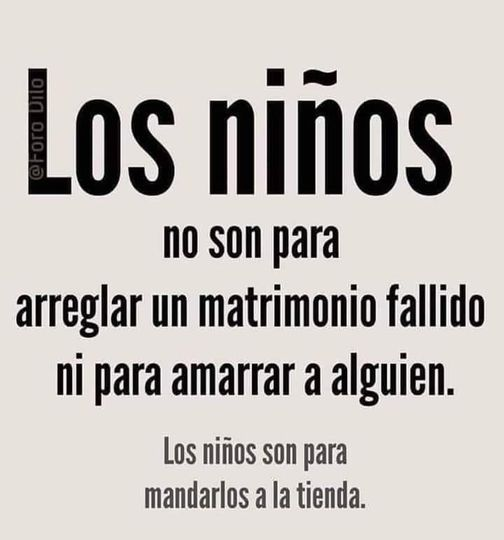
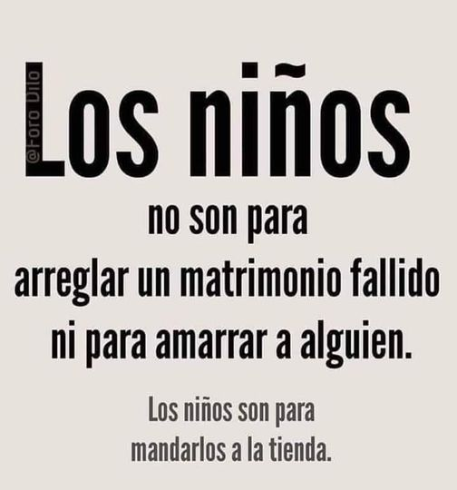

NO ESPECULES NI SUPONGAS
Érase una vez un leñador el cual un día se dio cuenta que no tenía su hacha. Sorprendido y con lágrimas en los ojos, se encontró cerca de su casa al vecino, quien como siempre lo hacía le saludó sonriente y amablemente.
Mientras éste entraba en su casa, el leñador de repente empezó a sospechar y pensar que tal vez hubiese sido el vecino quien le había robado el hacha. De hecho, ahora que lo pensaba bien su sonrisa parecía nerviosa, tenía una mirada extraña e incluso hubiese dicho que le temblaban las manos. Bien pensado, el vecino tenía la misma expresión que un ladrón, caminaba como un ladrón y hablaba como un ladrón.
Todo ello iba pensando el leñador, cada vez más convencido de haber encontrado al culpable del hurto, cuando de repente se dió cuenta de que sus pasos le habían llevado de nuevo al bosque donde había estado la noche anterior.
De pronto, tropezó con algo duro y cayó. Cuando miró al suelo...encontró su hacha! El leñador volvió de nuevo a su hogar con el hacha, arrepentido de sus sospechas, y cuando vio de nuevo a su vecino vio que su expresión, andar y manera de hablar eran (y habían sido en todo momento) las de siempre.
 
